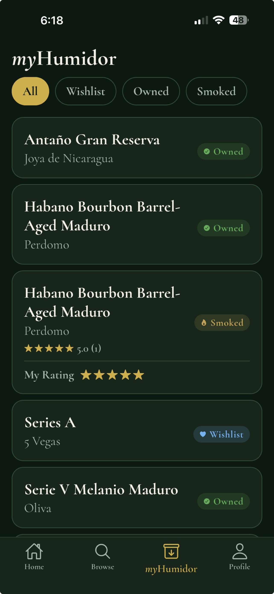
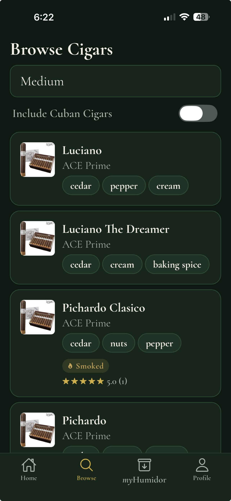
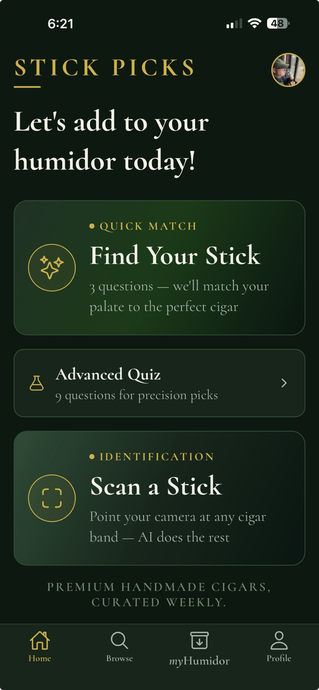
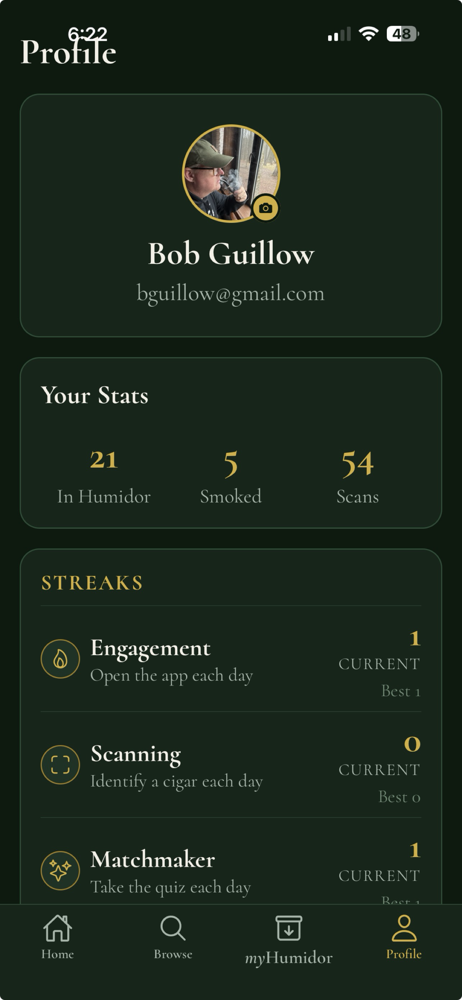

Stick Picks
Everything Stick Picks does, in one place.
Track every stick by brand, vitola, and rest time. Mark cigars Owned, Wishlist, or Smoked, and capture your own ratings the moment you put one down.
Filter by status, search by name, and see at a glance what's resting and what's earned a place on the wishlist.


Browse thousands of premium handmade cigars. Filter by strength, search by brand or name, and explore by flavor — cedar, pepper, cream, baking spice, and dozens more.
Every entry is curated with notes, pairings, and a path back to your humidor.
Quick Match asks three questions and matches your palate to the right cigar. The Advanced Quiz goes nine deep for precision picks.
Or skip the questions entirely — point your camera at any cigar band and Scan a Stick handles identification on the spot.


Your profile keeps a running tally — cigars in your humidor, smokes logged, scans completed.
Streaks reward the rituals that matter: opening the app, identifying a cigar, taking the quiz. A small nudge to keep your collection alive.
Stick Picks lands on the App Store soon. Questions, feedback, or want a heads-up at launch? Email support@stickpicks.app.